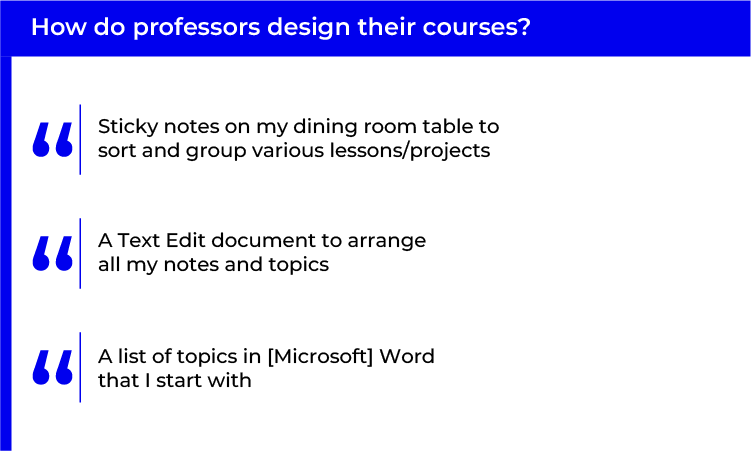

- Because professors often redesign their courses, improving that process could save them time and hassle.
- With a more efficient course design process, professors could focus on designing courses for varying learning styles.
The situation
The origin of Optimal Assessment
I partnered with two other designers at a hackathon to design a tool where students would list their preferred testing options (such as multiple-choice) for the professor to see in a dashboard. The designers I worked with were not able to continue with the project after the hackathon, but I kept going.
A band-aid solution
Did our design really solve the problem of helping professors design courses for students with diverse learning styles? I started to wonder why so many professors stick to giving the standard multiple-choice assessment when students could learn more from interactive experiences or student-led projects.
To find out why, I needed to do some user research.
Research
Survey results and insights
I surveyed eight professors, asking them about their course design process, the challenges that they face designing courses, and whether they would consider offering student guided creative projects.
Course design is an iterative process
Professors take varying organizational approaches
- Professors like to gather their course ideas and elements in one place.
- But these approaches require extra effort on the professor's end to organize everything correctly.

Timing, planning, and grading are challenges
- Because courses have so many moving parts it can be difficult to see how each part influences the course.
- What if professors could view all the factors that make up their course in one place to better understand how different parts of the course interact?
![A heading that says: What challenges do professors face with course design. Below, there are 4 quotes. The first quote says: Finding an overall flow for the course — most content is not linear in application or operation, but we have to put it into a linear timeline. The second quote says: Working with outside clients on course projects, realistic timelines, working in student teams for project delivery. The third quote says: Maintaining continuity of material, adding rich assessments without overloading myself with grading tasks. The fourth quote says: Knowing what topics, exercises, etc. will work since each semester is different.](images/optimal-assessment/ProcessGraphics/ChallengesGraphic.png)
Challenges with open-ended assessments
- Professors need to eliminate ambiguity before they can offer open-ended assessments.
- Open-ended assessments require more thoughtful planning, so a framework to plan out assessment details might be useful.
![A heading that says: What challenges do professors face with course design. Below, there are 4 quotes. The first quote says: Finding an overall flow for the course — most content is not linear in application or operation, but we have to put it into a linear timeline. The second quote says: Working with outside clients on course projects, realistic timelines, working in student teams for project delivery. The third quote says: Maintaining continuity of material, adding rich assessments without overloading myself with grading tasks. The fourth quote says: Knowing what topics, exercises, etc. will work since each semester is different.](images/optimal-assessment/ProcessGraphics/OpenEndedGraphic.png)
Secondary research
Universal design for learning
- Universal Design for Learning is an educational framework that flips the course design process on its head: first you create learning goals, then you design engaging assessments, and you finish by designing lessons.
- This framework helped me structure the information architecture of the application to follow this format.
Putting it all together
Common themes from my research
During the course design process, professors are focused on...
- Organizing course elements such as topics and notes.
- Planning schedules, lessons, and assessments.
- Creating assessments that can be graded in a fair and consistent manner.
- Understanding the learning styles of the class.
A revised problem
I now had a better understanding of the true problem that professors have with designing courses to fit varying learning styles:
Students learn in different ways, but many course structures
are one-size-fits-all. Professors want to give students a learning experience that works for everyone, but they don't know the learning styles of the class they are designing the course for.
Radically adjusting course structure to fit every student is necessary but is currently a massive undertaking.
The design process
Before I started designing screens, I put together what I knew about the professors who would be using this course design application and made a user journey about what they would need to do to design an ideal course.
User journey
Medium fidelity prototype design decisions
Thinking critically about course elements
- User need: Professors have to consider many factors when designing a course such as class goals and topics.
- My solution: I designed screens where the user can input these factors into lists, which would appear during the assessment creation flow to encourage the professor to think about, for instance, how the assessment they are creating achieves course goals.
Forming connections between course elements
- User need: The professors I surveyed like organizing course elements in one place, but they still have problems seeing how each element fits into the course as a whole.
- My solution: I designed a whiteboarding canvas screen where professors could connect course elements together spatially to help form relationships between ideas and elements. This could help the professors organize information and create new connections between different parts of the course.
Creating timelines and schedules
- User need: Professors said that creating timelines and fitting assessments into the schedule is a challenge.
- My solution: I added a "key dates" section where professors can split up individual assessments into smaller chunks to make timelines more manageable for themselves and students.
User testing insights
Due to time constraints, I only had time to do one user testing session (although I plan to do more soon).
Whiteboarding isn't for everyone
Because professors have so many components that they need to keep track of in each of their courses, I decided to design a screen where the professor could select the course components that apply to the assessment or lesson they are creating.
- The professor liked how she could view multiple aspects of a course all in one place.
- However, it was presented as a virtual whiteboarding canvas, and she said she wasn't a big fan of that.
- While this was just one comment from a single user, it got me thinking about the fact that not all professors would find a whiteboarding canvas intuitive.
- As a result, I redesigned this screen with more familiar components such as checkboxes and text inputs.
A confusing component
Because a course can have many different elements (such as a long list of topics), I needed to design a component that would allow professors to continuously add entries to a list through user input.
- My first iteration of this component duplicated the entire input field component each time the user added an entry.
- The professor found this confusing and had a hard time figuring out how to properly interact with the component.
- As a result, I iterated and redesigned the component so that instead of the entire input field being duplicated, the entry would just be listed as a tag under the input field.
First Iteration
Final Iteration
Final design decisions
UX design/information architecture
- Originally, the create course screen was divided across multiple separate screens. After looking at research about form patterns, I learned that splitting a form across multiple screens can create friction if a user decides to go back and change previous responses. I consolidated these screens into one, which should improve usability. However, when I conduct additional user testing, I will pay close attention to validate this.
Visual design
- I used green to signal primary actions to the user, such as a button that takes the user to the next page. I used red components to signify that an element will change something on the page when interacted with.
- In my final design, I more rigidly adhered to a grid system compared to my original medium fidelity prototype. This made the visual hierarchy clearer and should improve usability.
Outcome
I pitched this MVP with my partner in a business pitch competition and won first place. I am currently developing it into a functional MVP for improved user testing.
Lessons learned
A consistent design system
- One thing I learned from creating my own design system for this project is that reusing elements across contexts helps with rapid iteration and creating a cohesive product.
Being the only designer is tough
- My partner is not a designer, so I was in charge of the user research, UX design, visual design, and content design. As the only designer on this project, I had to stretch myself and my skills.
- This helped me grow as a designer, but also limited the project's potential since I didn't have another design perspective on the project. This is why I am planning to onboard another designer.
Final design
Use the arrow buttons below the image to view the next screen.
If you can't see the full image, try scrolling on it!
1/4

2/4

3/4

4/4
Prototype
View video below to see a clickable prototype. If YouTube embed doesn't work, click here to view the video.